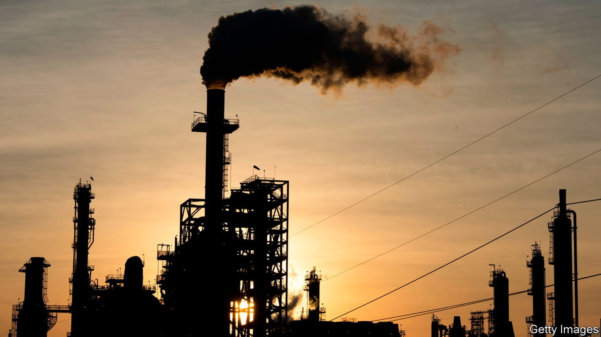
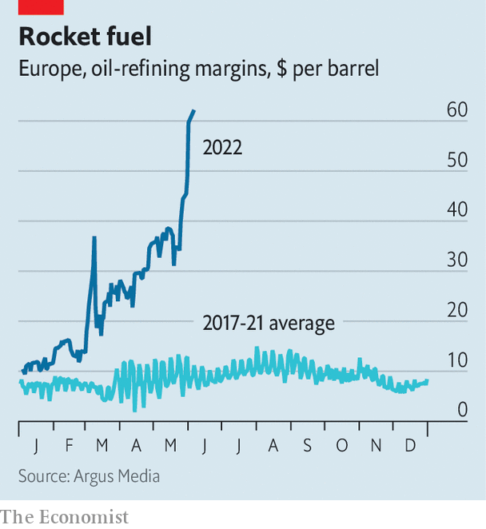

Refiners are providing a fresh source of drama for oil markets
The low-key, low-margin industry is printing money

America’s driving season has officially begun. Despite rising inflation and the lingering threat of the pandemic, motorists hit the highways with gusto over the recent Memorial Day long weekend. Some 40m Americans travelled by road, an increase of 8.3% on the same weekend a year earlier. That wanderlust came even as prices at the pump were about 50% above last year’s levels, driven by an intense squeeze on global refining.
In normal times, the refining business is a low-margin, low-drama adjunct to the geopolitically charged upstream business of oil production and the politically charged downstream business of retail sales. Refiners typically make profit margins of $5-10 a barrel and often go through painful spells of unprofitability. This time, however, refining is playing a starring role—the machinations of the oil-producing countries, war in Ukraine and sanctions on Russian oil exports notwithstanding. Margins for many refiners have rocketed, and bottlenecks in the sector are propelling global petrol prices upwards.
Three factors explain why refining is in the limelight. The first is a long-term decline in investment in advanced economies. With oil demand in the rich world forecast to plunge over the next two decades, investors are unwilling to spend many billions of dollars on facilities that could become stranded assets. Adding to this is environmental pressure on refining, which is seen as especially dirty, and regulations in California and Europe that favour greener fuels. Outside China and the Middle East, where capacity is expanding, refining capacity has plunged by some 3m barrels per day (bpd) since the start of the pandemic, reckons Alan Gelder of Wood Mackenzie, an energy consultancy.

The second factor that has roiled the refining business is Chinese policymaking. China has historically been a net exporter of refined products, sending large volumes to other Asian countries. In an attempt to fight local pollution and help meet climate targets, however, officials have cut export quotas for big refiners of gasoline, jet fuel and other products by more than 50% this year. On official plans, China is set to stop exporting most carbon-intensive refined products altogether by 2025. The perverse result is that it is sitting on roughly 7% of global spare capacity even as the rest of the world thirsts for transport fuels.
The third big disruptive force is, of course, Russia’s war in Ukraine and the resulting sanctions imposed on its exports of hydrocarbons. America and Britain have banned purchases of Russian oil; the eu has announced a partial embargo on crude imports, including one on refined products later this year. The effect of all this is not clear-cut. By widespread accounts (including from tanker-tracking experts), Russia is now exporting more crude oil than it did before the war. It is selling lots of cut-rate crude to India in particular, which is importing over 700,000 barrels a day more than it did before the invasion.
When it comes to refined products, though, both official sanctions and the voluntary “self sanctions” embraced by Western firms seem to be biting. According to Natasha Kaneva of JPMorgan Chase, a bank, Russia is selling roughly 500,000 fewer barrels of refined product a day than it was before the war, and may have been forced to shut down as much as 1.4m bpd of refining capacity in May. The result is an unprecedented shift, argues Richard Joswick of s&p Global, a research firm: “The world has plenty of refining capacity, but the spare capacity is moving into Russia and China.” As a result, he reckons that utilisation rates for refiners in the rest of the world will be much higher than previously envisioned.
The refining crunch could continue for a while yet. The coming Atlantic hurricane season, which is forecast to be stronger than normal, may shut down refineries in the Gulf of Mexico. Another factor is the precise timing and intensity of Europe’s latest round of sanctions on Russian oil exports. If implemented aggressively, these could further squeeze the sector.
Market forces could yet save the day. The painful price spikes seen at petrol pumps will eventually cool demand a little, and could lead to improvements in energy efficiency, both of which will help balance markets.
A shift in trade flows could also come to Europe’s aid. India’s world-class refiners, for instance, are turning global crisis into local opportunity. rbc Capital Markets, an investment firm, reckons that the country “is becoming the de facto refining hub for Europe”. Big new refineries are scheduled to come online soon in Kuwait and Saudi Arabia, which should help ease the shortages too. As Mr Joswick observes, “With margins this large, everybody has an incentive to run refineries flat out.” ■
Read more of our recent coverage of the Ukraine crisis. And for more expert analysis of the biggest stories in economics, business and markets, sign up to Money Talks, our weekly newsletter.